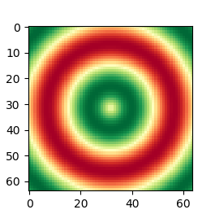
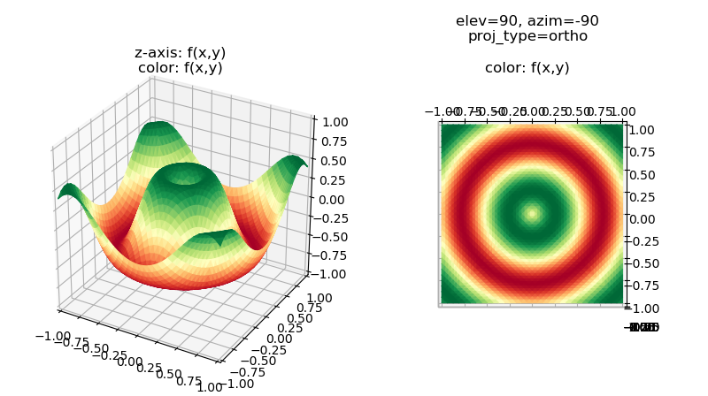
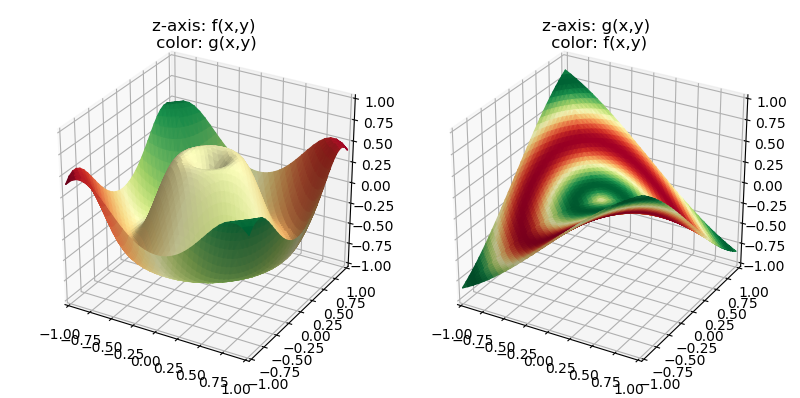

Color Mapping Using Functions¶
Surface color can be defined from function values that are mapped to colors using colormaps by calling the surface object method:
surface.map_cmap_from_op( op, camp )
The op argument is a function with coordinate arguments and returning a single value. The cmap argument is a color map or registered color map name. Returned function values at face coordinates are normalized and colors mapped from the colormap.
For this tutorial, the following two example functions are used to demonstrate this method:
f(x,y) = ½sin( 6r ) where r = ( x2 + y2 ) ½g(x,y) = sin( -xy )
First, consider the 2D visualization of the function f(x,y) using a simple Matplotlib script.
The script, in the following, is organized in the three part structure to parallel the construction which will be further used for 3D visualizations. Without a colorbar, there is no indication as to the functional range for the applied domain.
import matplotlib.pyplot as plt
import numpy as np
# 1. Define function to examine ....................................
def f_func(x,y) :
r = np.sqrt( x**2 + y**2)
Z = np.sin( 6.0*r )/2
return Z
# 2. Setup and map plane ...........................................
x = np.linspace(-1,1.0,64)
y = np.linspace(-1,1.0,64)
xx, yy = np.meshgrid(x, y)
z = f_func(xx,yy)
# 3. Construct figure, add surface, and plot ......................
fig = plt.figure(figsize=(2.65,2.65))
ax = plt.axes()
ax.imshow(z, cmap='RdYlGn')
plt.show()
For a 3D visualization of the function, first consider applying a colormap based on one coordinate position of the surface, in this case the z-axis. This is the 3D surface color mapping method used in the numerous Matplotlib 3D plotting Gallery examples.
The following 3D plots of this function only differ by the projected views of the surface. The default Matplotlib view is used for the left plot. The right plot used a view directly normal to the xy plane (looking directly down from the top) .
For the left plot, the functional values are represented by the elevation of the surface relative to the z-axis. The colormap is actually redundant, it contributes very little additional information. Surface shading would be sufficient for the 3D plot since the Z-axis provides the functional values over the domain.
When using the geometry to map colors, a mapping function can be defined which takes 3xN array and returns a single N array value as:
def func(xyz) :
x,y,z = xyz
# define v = f(x,y,z)
return v
A lambda function may be convenient to return a single N value from a function. For example:
def otherfunc(xyz) :
x,y,z = xyz
# define X,Y,Z = f(x,y,z)
return X,Y,Z
func = lambda xyz : otherfunc(xyz)[2]
When the return value is simply based on the surface geometry coordinates, the lambda function is simplified. For example, when only the z-coordinate is used to map color, ie. z=xyz[2]:
func = lambda xyz : xyz[2]
In the following script, the highlighted lines show the object method call used to map the colors. Instead of defining a separate function for the color mapping, lambda functions were used as the mapping function argument. The two different lambda functions result in the identical values. The first calls the geometry function and only returns the z coordinate value. The second lambda function just returns the z coordinate from the surface coordinates which has already been mapped. In both cases, the object color map is assigned during instantiation and then used in the functional mapping.
Note
If the color map argument is not provided in the method call, the surface object color map is used. If no color map is assigned during object instantiation, the Matplotlib default colormap of ‘viridis’ is used.
import numpy as np
from matplotlib import pyplot as plt
import s3dlib.surface as s3d
# 1. Define function to examine .....................................
def f_func(xyz) :
x,y,z = xyz
r = np.sqrt( x**2 + y**2)
Z = np.sin( 6.0*r )/2
return x,y,Z
# 2. Setup and map surfaces .........................................
surface_1 = s3d.PlanarSurface(5, cmap='RdYlGn' )
surface_1.map_geom_from_op( f_func )
surface_1.map_cmap_from_op( lambda xyz: f_func(xyz)[2])
surface_2 = s3d.PlanarSurface(5, cmap='RdYlGn' )
surface_2.map_geom_from_op( f_func )
surface_2.map_cmap_from_op( lambda xyz: xyz[2] )
# 3. Construct figures, add surface, plot ...........................
fig = plt.figure(figsize=(8,4.5))
ax1 = fig.add_subplot(121, projection='3d')
ax1.set(xlim=(-1,1), ylim=(-1,1), zlim=(-1,1) )
ax1.set_title('z-axis: f(x,y)\ncolor: f(x,y)')
ax1.add_collection3d(surface_1)
# .........
ax2 = fig.add_subplot(122, projection='3d')
ax2.set(xlim=(-1,1), ylim=(-1,1), zlim=(-1,1) )
ax2.set_proj_type('ortho')
ax2.view_init(elev=90, azim=-90)
ax2.set_title('elev=90, azim=-90\nproj_type=ortho\n\ncolor: f(x,y)')
ax2.add_collection3d(surface_2)
fig.tight_layout()
plt.show()
A core concept using S3Dlib is that surface geometry and surface color are controlled separately. Whereas geometry can be used to define color using a colormap, versatility of S3Dlib is using this separation. This is particularly useful as shown in the examples of Complex Number Representation, Geometry and Colormap or Two methods of Representing . In addition, surface shape defined by parametric values were indicated by color in the Parametric Animation example. In the examples section, surface shading is primarily only applied to enhance the visualization of the geometry, whereas color is generally used for additional functional relationships.
This concept is demonstrated above using both the f and g functions, but separately for color and geometry. In the two pair of highlighted lines in the script below, only the functional calls are reversed. A moderated amount of shading was applied. This was needed for the left plot to enhance the geometry since only a slight variation in the g function occurs near the origin. Further annotation of these plots would be to include colorbar values.
import numpy as np
from matplotlib import pyplot as plt
import s3dlib.surface as s3d
# 1. Define function to examine .....................................
def f_func(xyz) :
x,y,z = xyz
r = np.sqrt( x**2 + y**2)
Z = np.sin( 6.0*r )/2
return x,y,Z
def g_func(xyz) :
x,y,z = xyz
Z = np.sin(-x*y )
return x,y,Z
# 2. Setup and map surfaces .........................................
surface_1 = s3d.PlanarSurface(5, cmap='RdYlGn' )
surface_1.map_geom_from_op( f_func )
surface_1.map_cmap_from_op( lambda xyz: g_func(xyz)[2]).shade(.3)
surface_2 = s3d.PlanarSurface(5, cmap='RdYlGn' )
surface_2.map_geom_from_op( g_func )
surface_2.map_cmap_from_op( lambda xyz: f_func(xyz)[2]).shade(.3)
# 3. Construct figures, add surface, plot ...........................
fig = plt.figure(figsize=(8,4))
ax1 = fig.add_subplot(121, projection='3d')
ax1.set(xlim=(-1,1), ylim=(-1,1), zlim=(-1,1) )
ax1.set_title('z-axis: f(x,y)\n color: g(x,y)')
ax1.add_collection3d(surface_1)
# .........
ax2 = fig.add_subplot(122, projection='3d')
ax2.set(xlim=(-1,1), ylim=(-1,1), zlim=(-1,1) )
ax2.set_title('z-axis: g(x,y)\n color: f(x,y)')
ax2.add_collection3d(surface_2)
# .........
fig.tight_layout()
plt.show()